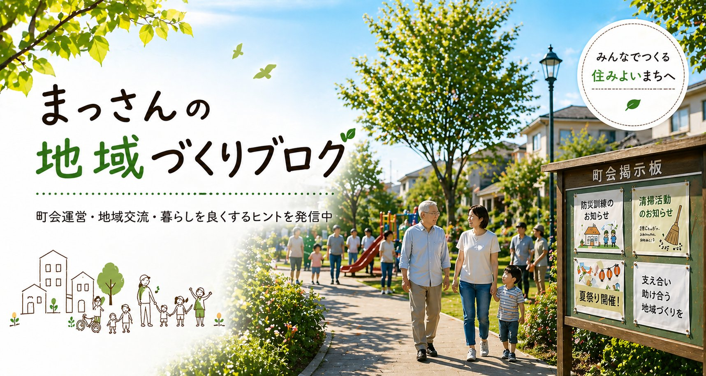
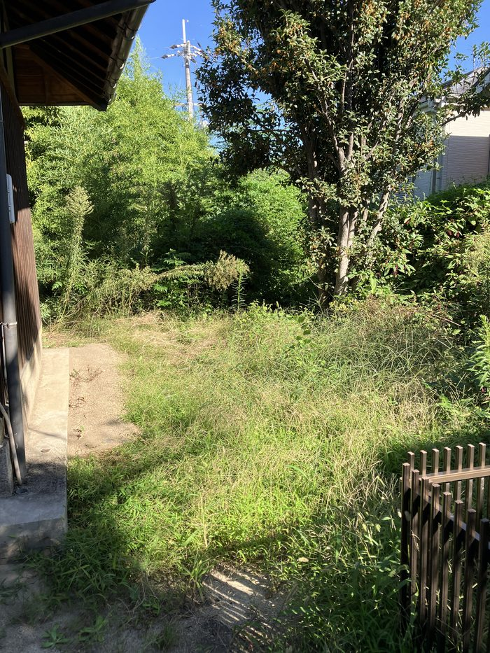
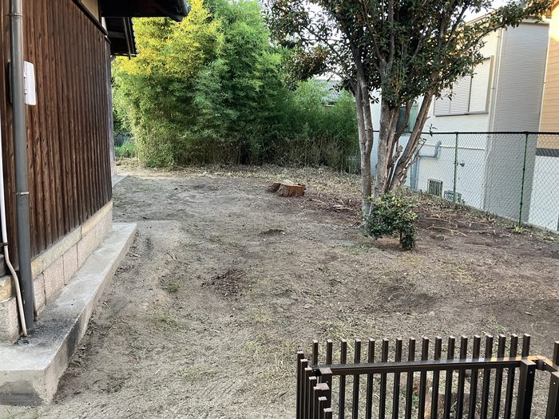
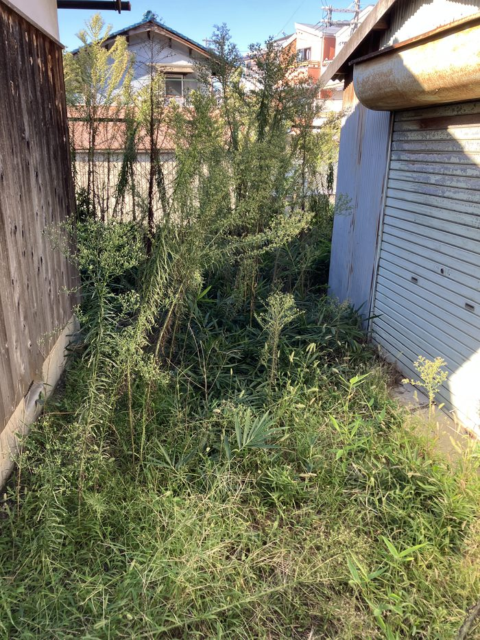
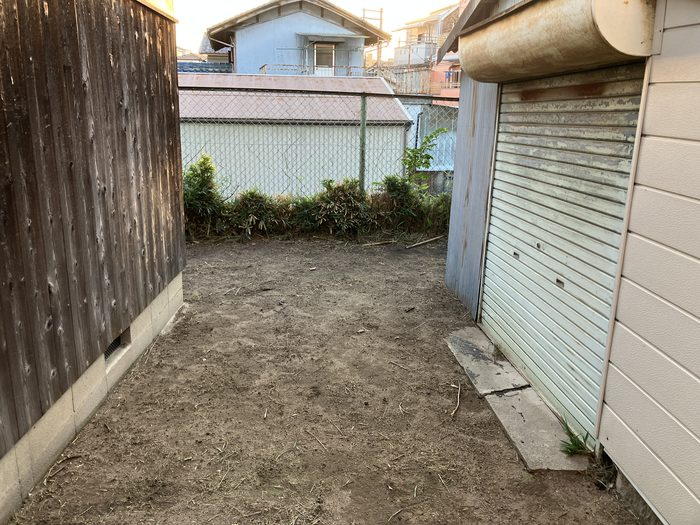
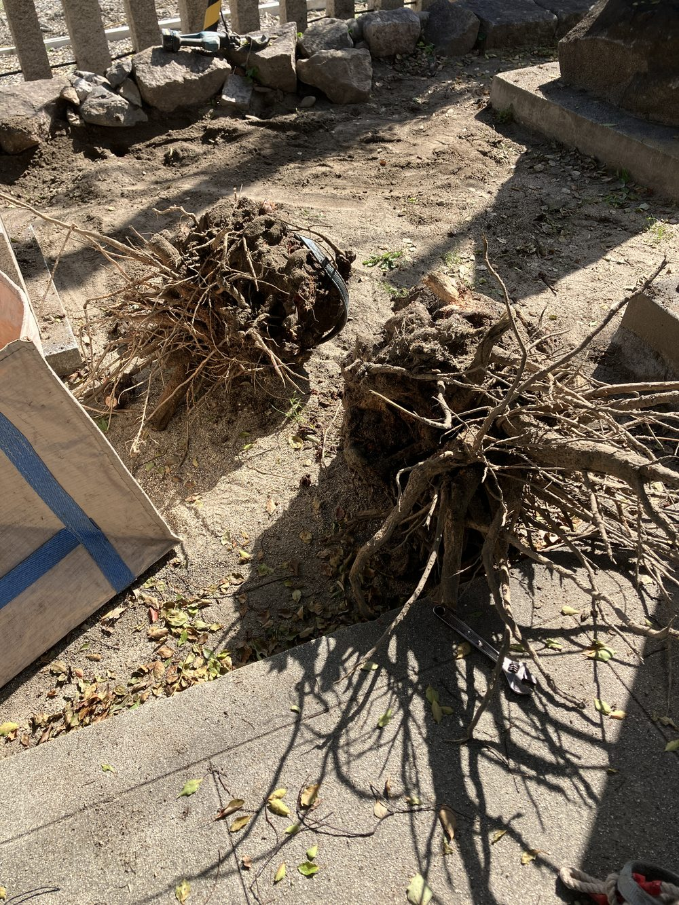
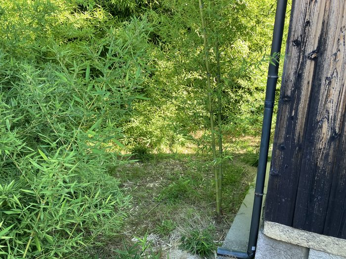
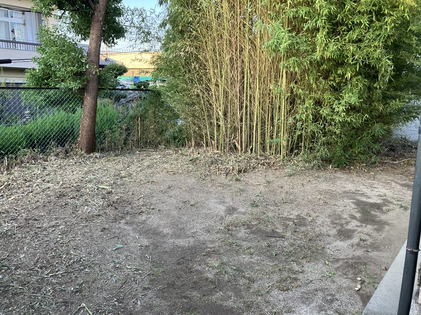

こんにちは、まっさんです。
10月9日、秋祭りに向けて神社の雑草駆除をしてもらいました。班長会議で、業者さんにお願いすることが決まっていた件です。
会議では約5万円とお伝えしていましたが、見積もりを再確認したところ、全部で10万円でした。
作業は、雑草の刈り取り、切り株の抜根、そして除草剤の散布まで。朝9時ごろの写真と、夕方の写真を並べてみます。




ここまで変わると、もう別の場所みたいです。正直、どこまで伸びていたのか自分でも把握しきれていませんでした。
今回お願いしてよかったのが、切り株の抜根です。地上の部分を切るだけだと、またそこから生えてきてしまいます。根っこごと掘り起こしてもらいました。

竹は、全部刈ってしまうのではなく、必要な分は残してもらいました。


ただ、除草剤の効き目もずっと続くわけではありません。毎年同じことを繰り返さないように、この後はクラピア（地面を覆ってくれる植物）を植えるか、防草シートと砂利にするかを検討しています。
秋祭りまで、あと少しです。
ほな、また。